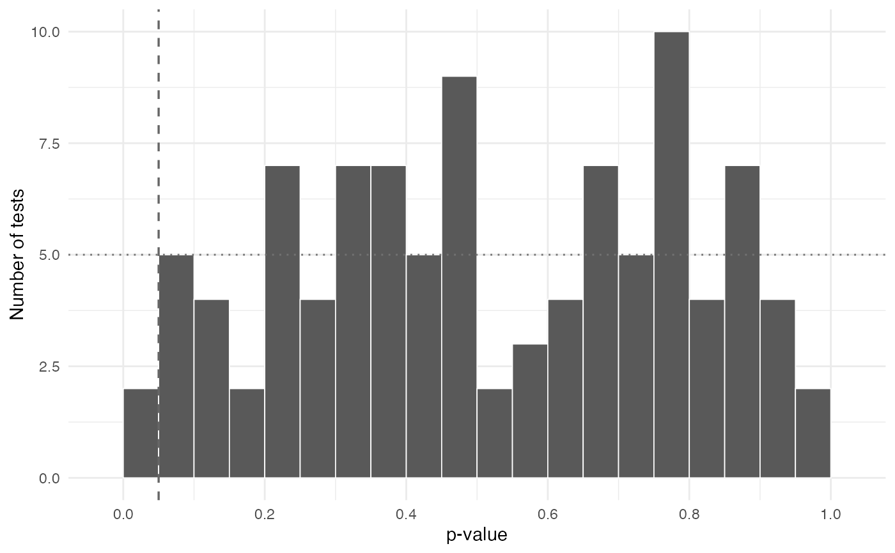
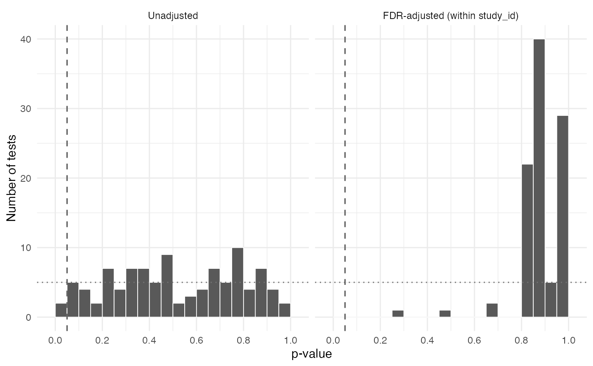

Plot design-check p-values against the uniform reference
Source:R/check_pvalues.R
plot_check_pvalues.RdHistogram of test p-values with a dotted line at the Uniform(0, 1)
expectation and a dashed line at alpha. A flat histogram sitting on
the reference line, with roughly alpha of the mass below the dashed
line, is direct evidence that the analyzed sample is sound.
Usage
plot_check_pvalues(
x,
p_col = "p_value",
group = NULL,
alpha = 0.05,
binwidth = 0.05,
fdr = FALSE,
xlab = "p-value"
)Arguments
- x
A data frame of test results, typically one element of the list returned by
stack_checks.- p_col
Character scalar naming the p-value column (default
"p_value").- group
Optional character scalar naming a column to adjust within. When supplied, the FDR adjustment is applied separately within each level of that column (e.g.
group = "study_id"for a within-study adjustment); the returned summary is still a single row across all tests. WhenNULL(default) the adjustment is applied across all tests at once. The two answer different questions, so the choice belongs at the call site.- alpha
Rejection threshold (default
0.05).- binwidth
Histogram bin width (default
0.05, giving 20 bins).- fdr
Logical. When
TRUE, the plot is faceted into unadjusted and Benjamini-Hochberg-adjusted panels (defaultFALSE).- xlab
Axis label for the p-value axis.
Value
A ggplot object. Deliberately unthemed beyond
theme_minimal() so that a project theme can be added to it.
See also
Other across-study summaries:
report_checks(),
stack_checks(),
summarize_check_pvalues()
Examples
set.seed(1)
tests <- data.frame(study_id = rep(letters[1:5], each = 20),
p_value = runif(100))
plot_check_pvalues(tests)
#> Warning: Removed 2 rows containing missing values or values outside the scale range
#> (`geom_bar()`).

plot_check_pvalues(tests, group = "study_id", fdr = TRUE)
#> Warning: Removed 4 rows containing missing values or values outside the scale range
#> (`geom_bar()`).
